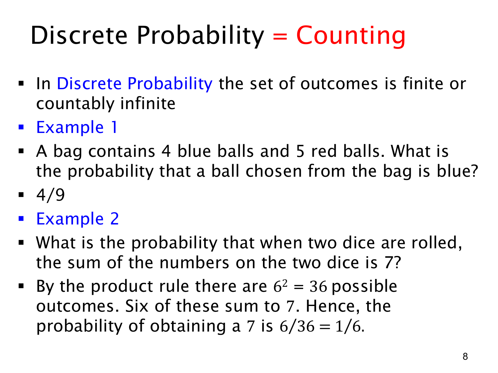

L1.9 · 第 8 页讲解原文
查看这一页课件

用计数计算离散概率
离散概率（discrete probability）的结果集合是有限或可数无限的。“可数无限”表示结果虽然无限多，但能够按序列列出。标题强调计数的重要性，不过“有利结果数除以总结果数”只直接适用于有限且等可能的情况；一般离散概率需要把各样本点的概率相加。
第一个例子：袋中有 4 个蓝球、5 个红球，随机取一个球。假设每个球被取到的机会相同，样本空间有 9 个具体的球，蓝球事件包含 4 个球，所以
p(蓝球)=4+54=94.
不能因为颜色只有蓝、红两种就认为各为 1/2。等可能的是各个球，两个颜色事件包含的球数不同。
第二个例子：掷两颗公平、相互独立的骰子，问点数和为 7 的概率。一次结果是有序对 (a,b)，分别表示第一颗与第二颗的点数。乘法法则给出
∣S∣=6×6=36.
和为 7 的结果是
(1,6),(2,5),(3,4),(4,3),(5,2),(6,1),
共 6 个，因此
p(和为 7)=366=61.
(1,6) 与 (6,1) 是不同的有序结果。若改成无序对，却仍假设每对等可能，就会算错，因为两个点数不同的无序对对应两种有序结果，相同点数则只对应一种。
这两个例子的共同步骤是：先选对等可能的基本结果，再分别计数总结果与符合条件的结果。